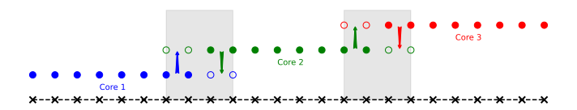

Communication

- Parallel computing splits tasks across cores.
- Communicate information as needed - ghost points.
- Exascale - millions of GPUs: communication limit.
- Bigger “numerical stencils” hit limit earlier.
- Simple spectral method couples every point.
Basis functions
- Standard FE function basis continuous at nodes - couples neighbouring elements.
- Discontinuous Galerkin basis functions only inside elements:
- only couples to direct neighbour;
- solution multi-valued at element boundary.
Legendre polynomials
Mass matrix \(\hat{M}_{ab} = \int N_a N_b\). Choose \(N_a\) orthonormal \(\implies \hat{M}\) identity.
In 1d, map \(x \to \xi \in [-1, 1]\): use Legendre polynomials \(P_a(\xi)\).
Need boundary flux. Have \(P_a(1) = 1, P_a(-1) = (-1)^a\). Use upwind:
\[
\hat{\psi}_a(x; \hat{\psi}_a^{-}, \hat{\psi}_a^{+}) = \begin{cases} \hat{\psi}_a^{-} & u < 0 \\ \hat{\psi}_a^{+} & u > 0 \end{cases}
\]
Nodal DG
Count: \(\sum_{n=1}^{N_\text{modes}} \hat{\psi}_n N_n \leftrightarrow \{ \psi( \xi_n ) \equiv \psi_n \}\).
If nodes \(\{ \xi_n \}\) chosen well, solve \(\psi_n\) directly.
Gauss-Lobatto points:
- nodes \(\xi = \{ \pm 1 \}\): communicate one number;
- natural for Gauss quadrature.
Vandermonde matrix \(\hat{V}_{in} = P_n(\xi_n)\):
\[
\hat{V}_{in} \hat{\psi}_n = \psi_i \, .
\]
Nodal DG equations
Nodal values \(\psi_i\) also give
\[
M_{ab} \partial_t \psi_a + K_{ab} \psi_a = F_b \, .
\]
Use Vandermonde matrix to map to nodes:
\[
\begin{aligned}
M &= \left( \hat{V} \hat{V}^T \right)^{-1} \, , \\
K^T &= M \left( \partial_x \hat{V} \right) \hat{V}^{-1} \, .
\end{aligned}
\]
Force vector is flux on boundary nodes only. Map to reference scales \(M\) by \(\det(J)\), not \(K\).
Implementation
from numpy.polynomial import legendre
from scipy.integrate import ode
import quadpy
m = 4 # modes
Ne = 10 # Number of elements
GL = quadpy.c1.gauss_lobatto(m+1)
nodes = GL.points
weights = GL.weights
V_hat = legendre.legvander(nodes, m)
c = np.eye(m+1)
for p in range(m+1):
V_hat[:, p] /= np.sqrt(2/(2*p+1))
c[p, p] /= np.sqrt(2/(2*p+1))
V_hat_inv = np.linalg.inv(V_hat)
d_V_hat = legendre.legval(nodes, legendre.legder(c)).T
M = np.linalg.inv(V_hat @ V_hat.T)
M_inv = V_hat @ V_hat.T
K = (M @ (d_V_hat @ np.linalg.inv(V_hat))).T
def dpsidt(t, psi):
rhs = np.zeros_like(psi)
dpdt = np.zeros_like(psi)
for e in range(1, Ne+1):
lo = e*(m+1)
hi = (e+1)*(m+1)
rhs[lo:hi] += u * Ks @ psi[lo:hi]
rhs[lo] += u * psi[lo-1]
rhs[hi-1] -= u * psi[hi-1]
dpdt[lo:hi] = (M_inv / dx_e * 2) @ rhs[lo:hi]
dpdt[:m+1] = dpdt[-2*(m+1):-(m+1)]
dpdt[-(m+1):] = dpdt[(m+1):2*(m+1)]
return dpdt
cfl = 0.5/(2*m+1)
r = ode(dpsidt).set_integrator('dopri5', max_step=cfl*dx_e)
r.set_initial_value(psi0)
r.integrate(t_end)